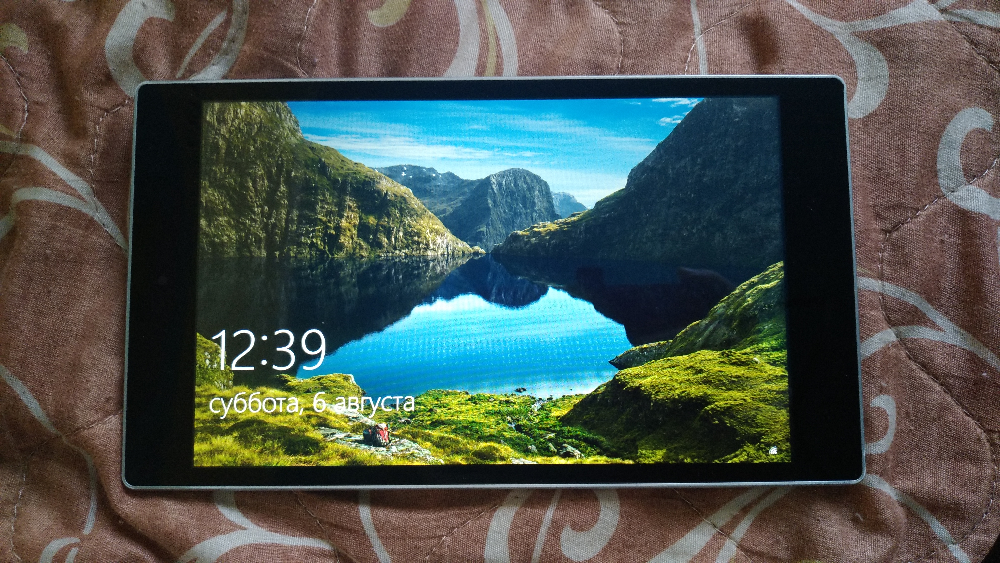

ODYS WinPad X9
Jump to navigation
Jump to search
|
 Running stock Win10 | |
| Manufacturer | ODYS |
|---|---|
| Name | WinPad X9 |
| Codename | tablet-x86uefi |
| Released | 2016 |
| Category | testing |
| Original software | Windows |
| Original version | 10 Home |
| postmarketOS kernel | mainline |
| Hardware | |
| Chipset | Intel Bay Trail T Z3735F |
| CPU | Intel Atom Z3735F @ 1.33 GHz |
| GPU | Atom Processor Z36xxx/Z37xxx Series Graphics & Display |
| Display | 8.9" 1280x800 IPS LCD |
| Storage | 32 GB |
| Memory | 2 GB |
| Architecture | x86_64 |
{kind=link}
| USB Networking |
Works
|
|---|---|
| Flashing |
Unavailable
|
| Touchscreen |
Works
|
| Display |
Works
|
| WiFi |
Works
|
| FDE | |
| Mainline |
Works
|
| Battery |
Partial
|
| 3D Acceleration |
Works
|
| Audio |
Broken
|
| Bluetooth |
Partial
|
| Camera |
Broken
|
| GPS | |
| Mobile data |
Unavailable
|
| SMS |
Unavailable
|
| Calls |
Unavailable
|
| USB OTG / USB-C Role switching |
Works
|
| NFC |
Unavailable
|
| Accelerometer | |
|---|---|
| Magnetometer | |
| Ambient Light | |
| Proximity | |
| Hall Effect | |
| Barometer | |
| Power Sensor | |
| Camera Flash | |
|---|---|
| Keyboard |
Unavailable
|
| Touchpad |
Unavailable
|
| USB-A |
Unavailable
|
| HDMI/DP |
Unavailable
|
| Ir TX |
Unavailable
|
| Ir RX | |
| Stylus | |
| Haptics | |
| Ethernet | |
| FOSS bootloader |
Broken
|
Contributors
- Kachiyama Nao
Users owning this device
- Kachiyama Nao (Notes: Usual Z3735F tablet)
Device Notes
- ODYS is sub-brend of Axdia same like DYON, Viomi, Roborock and +360. Axdia acts as OEM/ODM reseller.
- Device is using a generic port for x86 UEFI so it`s not separated device port.
- Work with this device is just began so it needs a lot to research about sound and sensors or so
- Tablet also can be called ODYS Cosmo Win X9
Installation
Just do usual SD installation
Development Notes
- XFCE seems to not work
- It has some issues with sound subsystem and Bluetooth
Troublesome ICs
- PMIC: X-Powers AXP288 (It has some power management issues)
- Wireless: Realtek RTL8723BS
- Sound: Everest Sound ES8316 (As I understand, it has mainline support)
- Camera: Double Omnivision OV2680 (front and rear sensors)
See also
- Odys WinPAd X9 review (in Deutsch)
- NBC device page
- Z3735F CPU off.page
- Tablet list with Z3735F CPU (not that complete but it has Winpad X9's clones)